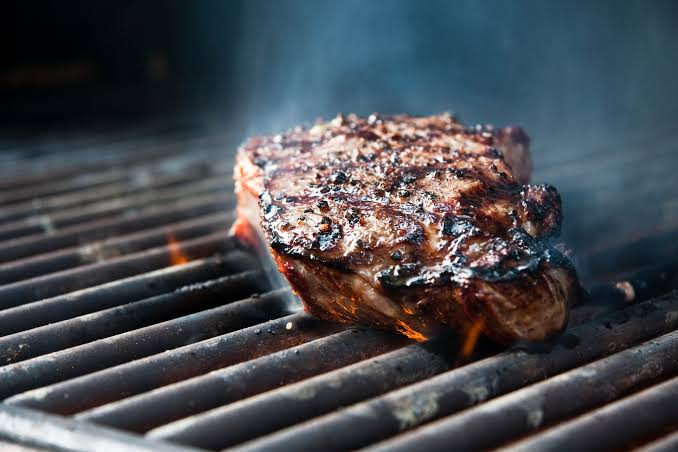

Home
Simple Steak Recipe

Description
This is a simple steak recipe you can easily follow at home using a barbecue!
Ingredients
- ½ cup vegetable oil
- 1 ounce steak spice seasoning mix
- 4 (8 ounce) beef top sirloin steaks
Steps
- Put oil and steak spice on a large enough platter to accommodate steaks; coat steak well with oil and spices. Cover the platter; marinate in the refrigerator 1 to 2 hours.
- Preheat an outdoor grill for high heat and lightly oil the grate.
- Cook steaks on the preheated grill to desired doneness.